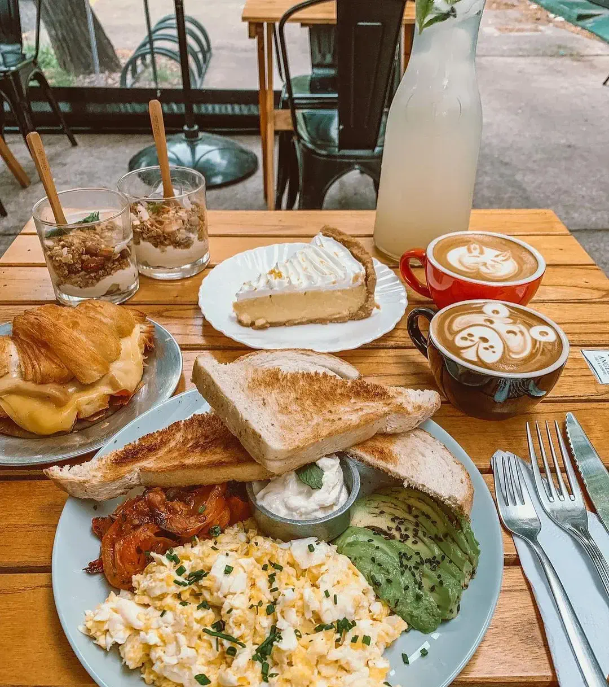
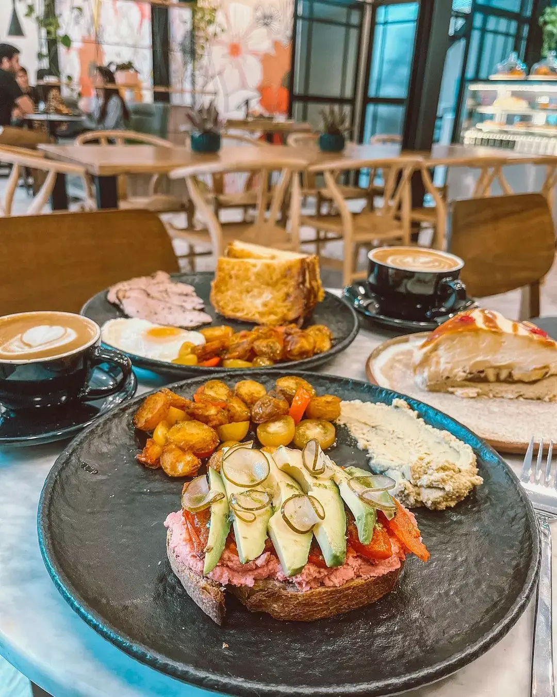
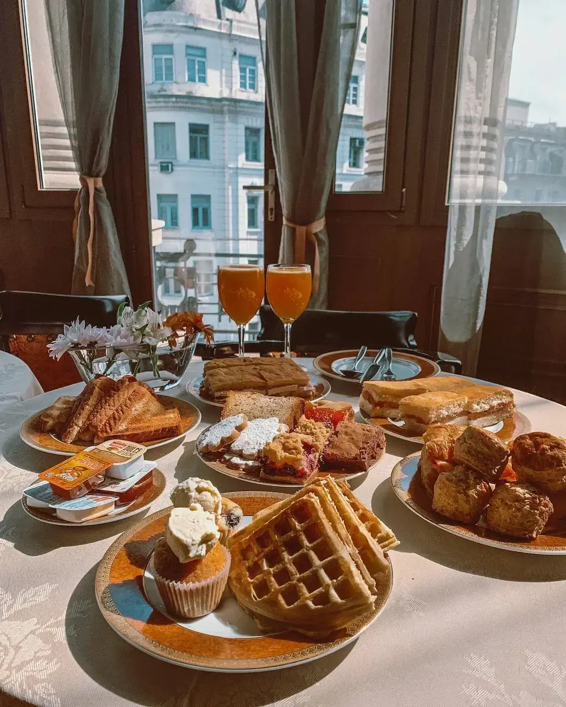
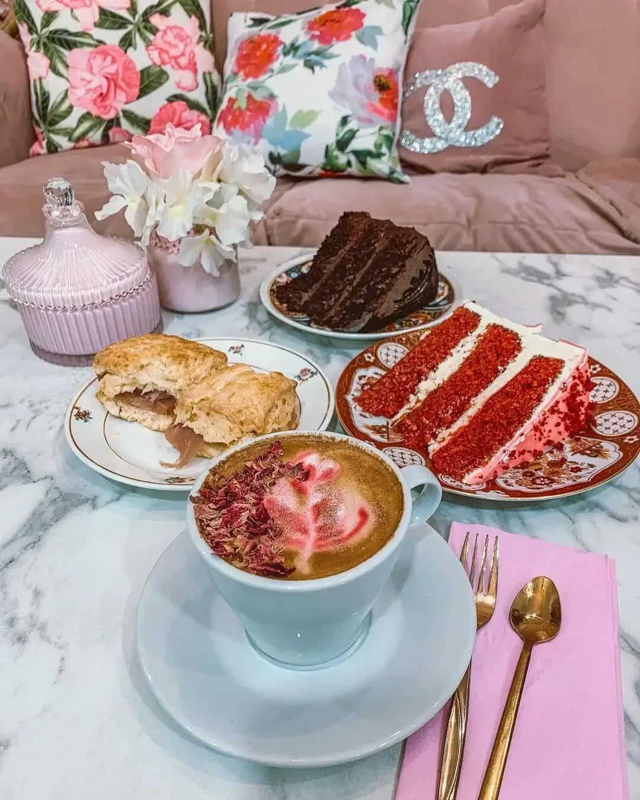

GALERÍA DE CAFETERÍA

Angela Deli Coffee
Cafetería pequeña y tranquila
. mesitas dentro y afuera con toldo y calefacción.
. carta bastante amplia con muchas bebidas como Pink latte, goldenmik coffee y
chocolate caliente con marshmallows.
. Tienen opciones veganas (alfajores, cookies, brownie, untable casero,
sándwiches, etc) y algunas sin gluten, todo bien aclarado en su carta.
Pet friendly, vegano, sin tacc.

Cafe Nerea
team leader
. cafetería de especialidad, pastelería y sándwiches bruncheros.
. Lugar lindo, espacioso y estético, con enchufes para recargar el celu o compu
. Menú no muy variado, pero tiene opciones tentadoras y diferentes.
. Plato favorito: Combinado de hummus de albahaca y remolacha, acompañado con
pan de masa madre

Hotel Savoy Bs. As.
team leader
. Menú accesible para que la mayoría pueda disfrutar.
. “té imperio” para 2 ($1300 p. persona) incluye infusión caliente y espumante x
persona (el té tiene más opciones dulces que el brunch)
. La cantidad del plato se adapta dependiendo la cantidad de gente que lo
pida.
. La opción vegetariana al momento sólo está disponible en el brunch.
Luce Cocina
. Local chico, mesas dentro con calefacción y fuera con
toldo.
. Opciones de merienda a buen precio, muffins, budines, y facturas de
hojaldre son horneadas todos los fines de semana.
. Podés pedir anticipadas y pasar a retirarlas (por lo general a partir de las
16hs) o ir directo al local y elegir las que te llamen la atención.
. Las facturas cambian finde a finde y lo anuncian en Instagram.
. Variedades de té de hierbas de la marca mashierbas.

Matcha Point
. Local dedicado al té verde japonés con opciones de pastelería, helado y bebidas
frías/calientes.
. Para veganos tienen muffins y brownies de matcha y de chocolate.
. Mesas separadas y un hermoso patio al aire libre.
. Hacen helados en el momento con nitrógeno líquido, lo que le da una cremosidad
especial.

MKaffee
team leader
. Local decorado de rosa y flores perfecto para fotos.
. Ofrecen mix interesante de patisserie francesa, pastelería, café de
especialidad y platos de la cocina armenia
. Opciones sin tacc y veganas que van variando por ej: alfajores de maicena,
brownies o empanadas (sin tacc), muffins, cookies, tostadas con hummus y palta
(vegan).

Obrador de Panes
team leader
. Ambientación medio vintage con pocas mesas, pastelería y panadería
artesanal.
. Trabajan con pan de masa madre, (es un poco más duro de lo normal).
. Lo más destacable es el sándwich de bondiola, de lo dulce, el Croissant y a
torta merengada tiene bizcocho súper húmedo merengue, pastelera de naranja y
frutas.